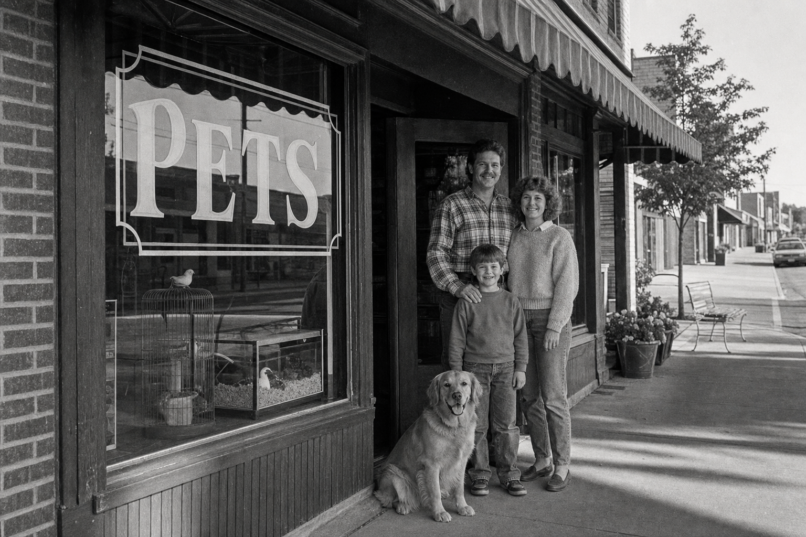

Two siblings. One tropical fish wall. A handshake deal in 1988.
This is the story of a West Michigan family who has been quietly running pet stores together for thirty-seven years — and the people, animals, and stubborn little decisions that kept it going.

August 1988 — the West Shore Mall.
John and Nancy Van Iwaarden — brother and sister — signed a lease on a small storefront in the West Shore Mall in Holland, Michigan. The sign was hand-painted. The first inventory was a wall of tropical fish, a few dog leashes, and a glass case of guinea pigs. They opened the doors in August and never looked back.
The "V.I." in V.I. Pets was, depending on who you ask, either "Van Iwaarden" or "Very Important." Both turned out to be true.
"We didn't have a business plan. We had a fish wall and a phone book. People came in for fish and stayed for the advice." — John Van Iwaarden, Founder
1993 — Plainfield opens.
Five years in, demand was outgrowing the Holland store. The Plainfield Avenue location opened in Grand Rapids — 5,000 square feet of tropical fish, saltwater tanks, reptiles, and a growing community of fishkeepers and reef hobbyists. It quickly became the place in West Michigan to find the unusual: a frogfish, a juvenile clown trigger, a coral frag you couldn't get at the big box. Years later, Fox 17 would call us "the exotic pet specialists of Grand Rapids."
The Cutlerville store.
Cutlerville came next — a larger format, with a big fish room and a full dry-goods section serving south Grand Rapids. Three stores, all family-run, all sharing the same vendors, the same VIP card, and the same answer to the question "do you know what you're doing?" Yes. We do. We have for a long time.
The hard middle years.
The 2000s were not kind to family pet stores. PetSmart and Petco opened West Michigan locations within a few miles of every one of ours. Chewy turned dog food into a doorstep subscription. We watched independent stores around us close, and we made some hard calls of our own. The Jenison store closed. We tightened up. We doubled down on the one thing the big box couldn't copy: actually knowing the animals we sell.
Today, two of the original three stores are still family-owned. The Plainfield store has been carried forward by Jillian Wisner since 2019 — herself a longtime customer who couldn't bear to see it leave the family of independent stores. The Holland store is still run, day in and day out, by John.
What we still believe.
- The animal comes first. We won't sell a fish that doesn't fit your tank, a reptile that won't survive your setup, or a puppy that hasn't been vet-checked. We've turned down sales for thirty-seven years and we're not about to start lying now.
- You get the same person every time. The team at Holland has been with us for years. You can call and ask for Laura, Rebecca, or Michael by name.
- Knowledge is free. Free aquarium water testing. Free advice on tank cycling, beardie lighting, puppy training. We don't gatekeep what we know.
- We honor what we sell. If something we sold you doesn't work out, we want to hear about it. Call us. We'll figure it out.
What's new.
This website is one of those new things. For thirty-seven years our business has been face-to-face — and that part isn't going anywhere. But the world your kids and grandkids shop in is online, and we want to meet them there too. So you can now order food for pickup, reserve a puppy with a deposit, and have a 40-pound bag of Fromm shipped to your door.
The store hasn't changed. We just added a door.
The next chapter.
John is preparing to hand off the Holland store. After thirty-seven years it is, in his words, "time for someone with fresh legs to take it the next mile." The store will go to someone who promises to keep it a real pet store — staffed by people who know the animals, not a clearance aisle in a national chain.
This site, the puppy nursery, the VIP program, the online shop — these are part of what we're handing over. A working modern business. Still family-feeling. Still West Michigan.
"We were the pet store that took ten minutes to set up your tank. We still are. Just now you can pay online." — John Van Iwaarden, Owner
A short timeline.
- 1988John and Nancy Van Iwaarden open V.I. Pets in the West Shore Mall, Holland.
- 1993Plainfield Avenue location opens in Grand Rapids. The big fish room becomes a destination.
- 1996Cutlerville store opens on South Division.
- 2002The VIP Card launches — still going, still free, still 10% off.
- 2011Fox 17 features the Plainfield store's exotic reptile selection.
- 2019Jillian Wisner takes over the Plainfield store, keeping it independent.
- 2024The Holland puppy nursery launches with hand-picked breeders and a 14-day health guarantee.
- 2026This site goes live. Same people. Same animals. New front door.